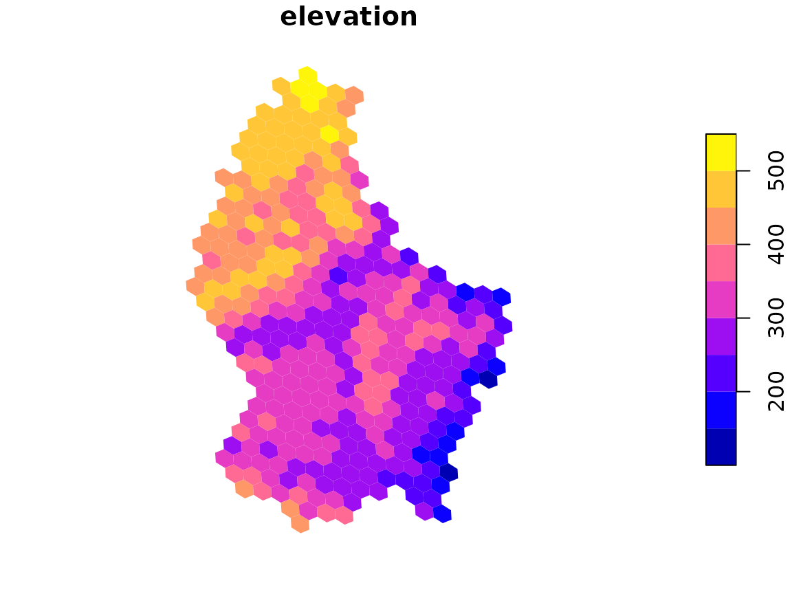
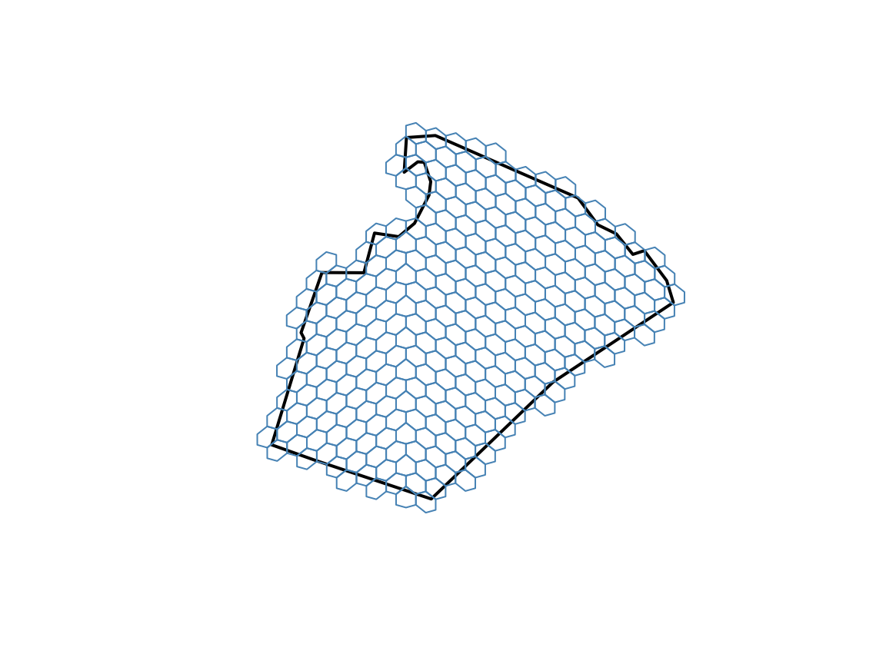

Much spatial data arrives as rasters (gridded images such as elevation or climate) or as polygons (such as countries or study areas). This vignette shows how to move both onto globalhex cells. It uses the terra, exactextractr, and sf packages.
From raster to cells
terra includes a small elevation raster of Luxembourg:
elevation <- rast(system.file("ex/elev.tif", package = "terra"))
elevation
#> class : SpatRaster
#> size : 90, 95, 1 (nrow, ncol, nlyr)
#> resolution : 0.008333333, 0.008333333 (x, y)
#> extent : 5.741667, 6.533333, 49.44167, 50.19167 (xmin, xmax, ymin, ymax)
#> coord. ref. : lon/lat WGS 84 (EPSG:4326)
#> source : elev.tif
#> name : elevation
#> min value : 141
#> max value : 547raster_to_cell() finds every cell that overlaps the
raster and summarizes the pixels inside each one:
elevation_hex <- raster_to_cell(elevation, resolution = 8, progress = FALSE)
elevation_hex
#> # A tibble: 345 × 2
#> cell elevation
#> <gh_cell> <dbl>
#> 1 0006255506 439.
#> 2 0006255501 485.
#> 3 0006255512 481.
#> 4 0006255513 477.
#> 5 0006032664 493.
#> 6 0006032606 491.
#> 7 0006255434 445.
#> 8 0006255435 442.
#> 9 0006255566 476.
#> 10 0006255560 450.
#> # ℹ 335 more rows
plot(elevation_hex)
The result is a hex_data object, so everything in
vignette("plotting") applies. Cells where the raster has no
data are dropped; use drop_na = FALSE to keep them.
How pixels are summarized
By default, each cell gets the area-weighted mean of the pixels it overlaps. A pixel that is only partly inside a cell counts only for the part inside. Area weighting matters for longitude/latitude rasters, whose pixels get smaller toward the poles. For categorical rasters, such as land cover, the default is the most common class, weighted the same way.
Choose other summaries with fun, using any exactextractr
summary:
elevation_range <- raster_to_cell(
elevation,
resolution = 7,
fun = c("min", "max"),
progress = FALSE
)
elevation_range
#> # A tibble: 62 × 3
#> cell elevation_min elevation_max
#> <gh_cell> <dbl> <dbl>
#> 1 000625551 461 493
#> 2 000625550 394 505
#> 3 000603260 469 547
#> 4 000625556 371 516
#> 5 000603266 424 517
#> 6 000625543 342 479
#> 7 000625553 371 515
#> 8 000603263 471 471
#> 9 000625542 374 507
#> 10 000625552 323 519
#> # ℹ 52 more rowsSet weights = NULL to weight pixels only by how much of
each one falls inside the cell, without accounting for pixel area.
Into cells you already have
If you already have cells, perhaps from binning points, bring raster values into them with one of two functions:
-
cell_extract()uses the same exact, area-weighted summaries asraster_to_cell(). -
cell_sample()reads the single pixel under each cell’s center. It is much faster but ignores the rest of the cell, so it suits rasters whose pixels are smaller than the cells.
sites <- point_to_cell(
data.frame(lon = c(6.13, 5.97, 6.36), lat = c(49.61, 49.90, 49.75)),
resolution = 7
)
cell_extract(sites, elevation)
#> # A tibble: 3 × 2
#> cell elevation
#> <gh_cell> <dbl>
#> 1 000625526 319.
#> 2 000625505 416.
#> 3 000625536 334.
cell_sample(sites, elevation)
#> # A tibble: 3 × 2
#> cell elevation
#> <gh_cell> <int>
#> 1 000625526 314
#> 2 000625505 370
#> 3 000625536 363Rasters that cover the globe
Global rasters work the same way. Rasters whose longitudes run from 0
to 360, or that use a projected coordinate system, are handled
automatically. A global grid has many cells at fine resolutions (see the
table in vignette("globalhex")), so
raster_to_cell() stops with an error if a result would
exceed max_cells. Raise it deliberately when you need
more.
From polygons to cells
cell_cover() returns the cells whose
centers fall inside a polygon:
counties <- sf::st_read(system.file("shape/nc.shp", package = "sf"), quiet = TRUE)
county <- counties[counties$NAME == "Wake", ]
wake_cells <- cell_cover(county, resolution = 8)
length(wake_cells)
#> [1] 292
plot(sf::st_geometry(county), border = "black", lwd = 2)
plot(sf::st_geometry(sf::st_as_sf(wake_cells)), add = TRUE, border = "steelblue")
Because selection is by cell center, cells along the edge may stick out of the polygon or leave small gaps. Use a finer resolution to follow the edge more closely.
Holes in polygons, such as a lake inside a park, are excluded by
default; set include_holes = FALSE to ignore them. Large
polygons at fine resolutions can produce a great many cells, so
cell_cover() also has a max_cells limit.
Back to sf
To combine cells with other vector data, convert them to sf polygons
with sf::st_as_sf(). Each row is one cell:
sf::st_as_sf(wake_cells[1:3])
#> Simple feature collection with 3 features and 1 field
#> Geometry type: POLYGON
#> Dimension: XY
#> Bounding box: xmin: -78.75 ymin: 36.03853 xmax: -78.63901 ymax: 36.08575
#> Geodetic CRS: WGS 84
#> # A tibble: 3 × 2
#> cell geometry
#> <gh_cell> <POLYGON [°]>
#> 1 0200314306 ((-78.713 36.05799, -78.713 36.07394, -78.73149 36.08575, -78.75 3…
#> 2 0200314361 ((-78.67602 36.05034, -78.676 36.06629, -78.69449 36.07809, -78.71…
#> 3 0200314363 ((-78.63904 36.04269, -78.63901 36.05864, -78.65749 36.07044, -78.…